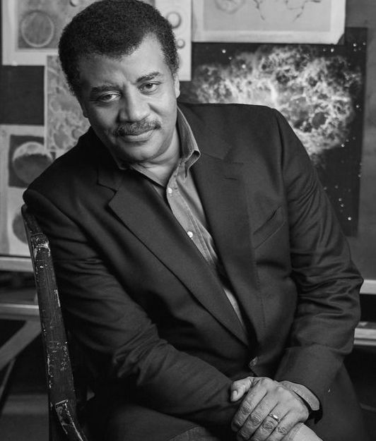

A painting of Neil deGrasse Tyson posing scientifically. Dr. Tyson refuses to take photos and it is believed that he could be part-vampire.A painting of Neil deGrasse Tyson posing scientifically. Dr. Tyson refuses to take photos and it is believed that he could be part-vampire.A painting of Neil deGrasse Tyson posing scientifically. Dr. Tyson refuses to take photos and it is believed that he could be part-vampire.A painting of Neil deGrasse Tyson posing scientifically. Dr. Tyson refuses to take photos and it is believed that he could be part-vampire.